library(ggplot2); library(sjPlot)
library(ggpubr); library(gtsummary)
pen <- palmerpenguins::penguins6 Creating Plots

Learn more about ggplot2
Visualizing your data is hands down the most important thing you can learn to do. Seeing is critical to understanding. There are two audiences in mind when creating data visualizations:
- For your eyes only: These are quick and dirty plots, without annotation. Meant to be looked at once or twice.
- To share with others: These should have informative captions, axes labels, titles, colors as needed, etc. We’ll see how to add these features throughout this course.
The functions from the ggplot2 package, along with derivatives such as ggpubr and sjPlot, automatically do a lot of this work for you. While all of these can be made with base R plotting functions, we are intentionally choosing to highlight function that create good quality plots with very little code and are quite extensible and flexible.
6.1 The syntax of ggplot
The reason we use the functions in ggplot2 is for consistency in the structure of it’s arguments. Here is a bare bones generic plotting function:
ggplot(data, aes(x=x, y=y, col=col, fill=fill, group=group)) + geom_THING() Required arguments
data: What data set is this plot using? This is ALWAYS the first argument.aes(): This is the aesthetics of the plot. What variable is on the x, and what is on the y? Do you want to color by another variable, perhaps fill some box by the value of another variable, or group by a variable.geom_THING(): Every plot has to have a geometry. What is the shape of the thing you want to plot? Do you want to plot point? Usegeom_points(). Want to connect those points with a line? Usegeom_lines(). We will see many varieties in this lesson.
Horst AM, Hill AP, Gorman KB (2020). palmerpenguins: Palmer Archipelago (Antarctica) penguin data. R package version 0.1.0. https://allisonhorst.github.io/palmerpenguins/
I am loading the penguins data set out of the palmerpenguins package and storing it into a data frame named pen. We will be exploring variables such as species, body weight, the island and flipper lengths.
str(pen)tibble [344 × 8] (S3: tbl_df/tbl/data.frame)
$ species : Factor w/ 3 levels "Adelie","Chinstrap",..: 1 1 1 1 1 1 1 1 1 1 ...
$ island : Factor w/ 3 levels "Biscoe","Dream",..: 3 3 3 3 3 3 3 3 3 3 ...
$ bill_length_mm : num [1:344] 39.1 39.5 40.3 NA 36.7 39.3 38.9 39.2 34.1 42 ...
$ bill_depth_mm : num [1:344] 18.7 17.4 18 NA 19.3 20.6 17.8 19.6 18.1 20.2 ...
$ flipper_length_mm: int [1:344] 181 186 195 NA 193 190 181 195 193 190 ...
$ body_mass_g : int [1:344] 3750 3800 3250 NA 3450 3650 3625 4675 3475 4250 ...
$ sex : Factor w/ 2 levels "female","male": 2 1 1 NA 1 2 1 2 NA NA ...
$ year : int [1:344] 2007 2007 2007 2007 2007 2007 2007 2007 2007 2007 ...6.2 One categorical variable
Both Nominal and Ordinal data types can be visualized using tables, barcharts or pie charts.
6.2.1 Barchart
A Barchart or barplot takes these frequencies, and draws bars along the X-axis where the height of the bars is determined by the frequencies seen in the table.
Using ggplot2 with the geom_bar() geometry layer gives us actual wide bars, and better axis labels.
ggplot(pen, aes(x=species)) + geom_bar()
Using the plot_frq function from the sjPlot package builds on the geom_bar() type plot from ggplot, but adds frequncies and relative percentages on the plot.
plot_frq(pen, "species")
This single graph provides a lot of good information and is a recommended choice to use.
6.2.2 Pie charts
A pie chart is a circular statistical graphic which is divided into slices to illustrate percentages out of a whole. While pie charts are very widely used in the media and business, there are some major drawbacks in that “humans are pretty bad at reading angles” (Ref: The Issue with Pie Chart)
The approach is to pipe the results of a table to a pie using base R. But the results are kinda “meh”.
table(pen$species) |> pie()Nicer pie charts using ggplot2 or ggpubr functions require the data set to be pre-aggregated, and so we will come back to these approaches in a later lesson.
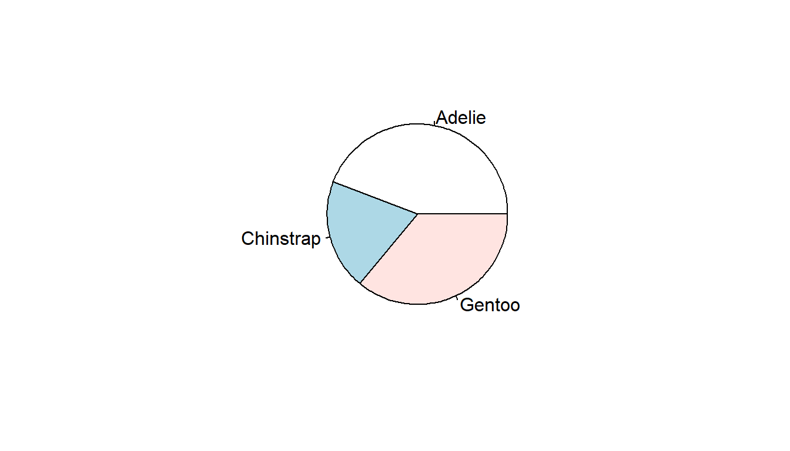
6.3 One continuous variable
We will examine the chonkiness of the penguin (body_mass_g) using several types of appropriate visualizations including histograms, density plots, boxplots and violin plots.
6.3.1 Histogram
Rather than showing the value of each observation, we prefer to think of the value as belonging to a bin. The height of the bars in a histogram display the frequency of values that fall into those of those bins.
Since the x-axis is continuous the bars touch. This is unlike the barchart that has a categorical x-axis, and vertical bars that are separated.
Using the ggplot2 package we can create a histogram by adding the layer geom_histogram().
ggplot(pen, aes(x=body_mass_g)) + geom_histogram()
In contrast to ggplot2’s common starter code and different geometries, the ggpubr package uses specific functions for each type of plot. The gghistogram package makes a histogram very similar to the ggplot2 default, but with a different theme applied (different appearance). Otherwise it’s the same.
gghistogram(pen, x="body_mass_g")
Variables names in quotes
This is a feature of ggpubr functions - variable names are always in quotes.
6.3.2 Density curves
To get a better idea of the true shape of the distribution we can “smooth” out the bins and create what’s called a density plot or curve. Notice that the shape of this distribution curve is much… “wigglier” than the histogram may have implied.
With ggplot2 we use the geom_density() geometry to produce a nicer looking density plot with minimal additional code.
ggplot(pen, aes(x=body_mass_g)) + geom_density()
And the ggdensity function from the ggpubr package creates a very similar density plot with a different default theme.
ggdensity(pen, x="body_mass_g")
6.3.3 Boxplots
Another very common way to visualize the distribution of a continuous variable is using a boxplot. Boxplots are useful for quickly identifying where the bulk of your data lie. R specifically draws a “modified” boxplot where values that are considered outliers are plotted as dots.
With ggplot you can create either a horizontal or vertical boxplot by specifying your numeric variable to be on either x or y . Notice the middle of the box is centered on 0, this is just a placeholder. This axis has no inherent meaning.
ggplot(pen, aes(x=body_mass_g)) + geom_boxplot() # left
ggplot(pen, aes(y=body_mass_g)) + geom_boxplot() # right

You can also make a boxplot using the ggbpxplot function from the ggpubr package, however it you must specify that the quantitative variable is on the y axis otherwise it yells at you.
ggboxplot(pen, y="body_mass_g")
ggboxplot(pen, x="body_mass_g")Error in (function (fun, data, x, y, combine = FALSE, merge = FALSE, color = "black", : argument "y" is missing, with no default6.4 Two continuous variables
Visualizing the relationship between two continuous variables is done using a scatterplot. Let’s compare the flipper_length_mm of a penguin to it’s body_mass_g.
With ggplot we specify both the x and y variables, and add geom_point geometry layer.
ggplot(pen, aes(x=flipper_length_mm, y=body_mass_g)) + geom_point()
The ggscatter function creates a similar scatterplot.
ggscatter(pen, x="flipper_length_mm", y="body_mass_g")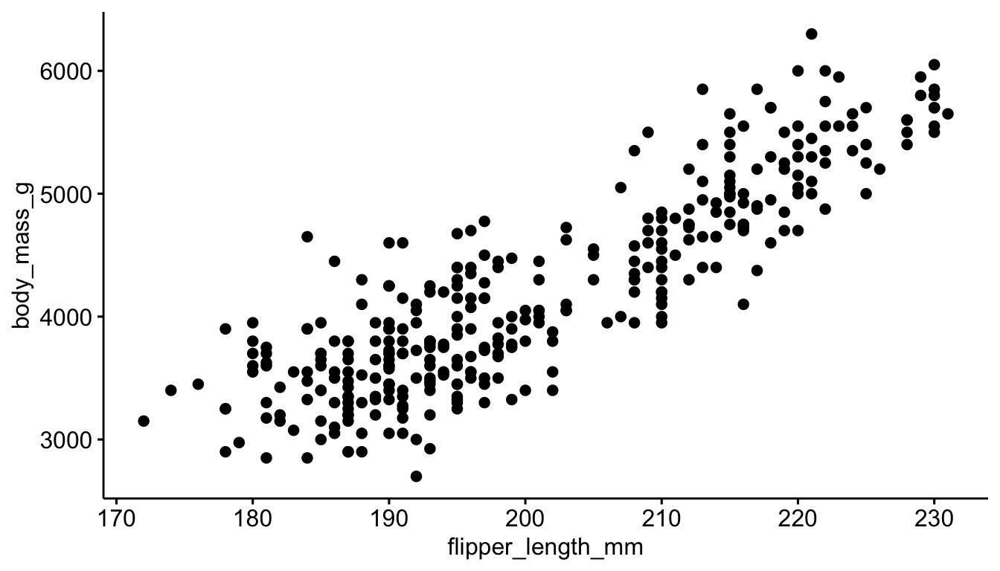
6.4.1 Adding trend lines lines
Two most common trend lines added to a scatterplots are the “best fit” straight line and the “loess” (low-ess) smoother line. Adding a trend line to this plot using base R is a bit tricker, so we won’t bother.
A trend line can be added by adding a geom_smooth() layer.
ggplot(pen, aes(x=flipper_length_mm, y=body_mass_g)) + geom_point() +
geom_smooth() 
Here the point-wise confidence interval for this loess line is shown in grey. If you want to turn the confidence interval off, use se=FALSE.
We can add another geom_smooth() layer for the lm (linear model) line in blue, and the loess line (by not specifying a method) in red.
ggplot(pen, aes(x=flipper_length_mm, y=body_mass_g)) + geom_point() +
geom_smooth(se=FALSE, method="lm", color="red") +
geom_smooth(se=FALSE, color="blue")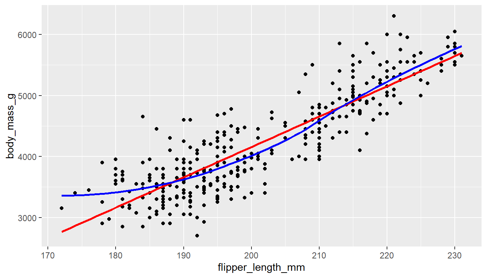
You can add either a linear model line or a loess line to a ggscatter using the add= argument.
ggscatter(pen, x="flipper_length_mm", y="body_mass_g", add = "loess")
ggscatter(pen, x="flipper_length_mm", y="body_mass_g", add = "reg.line")
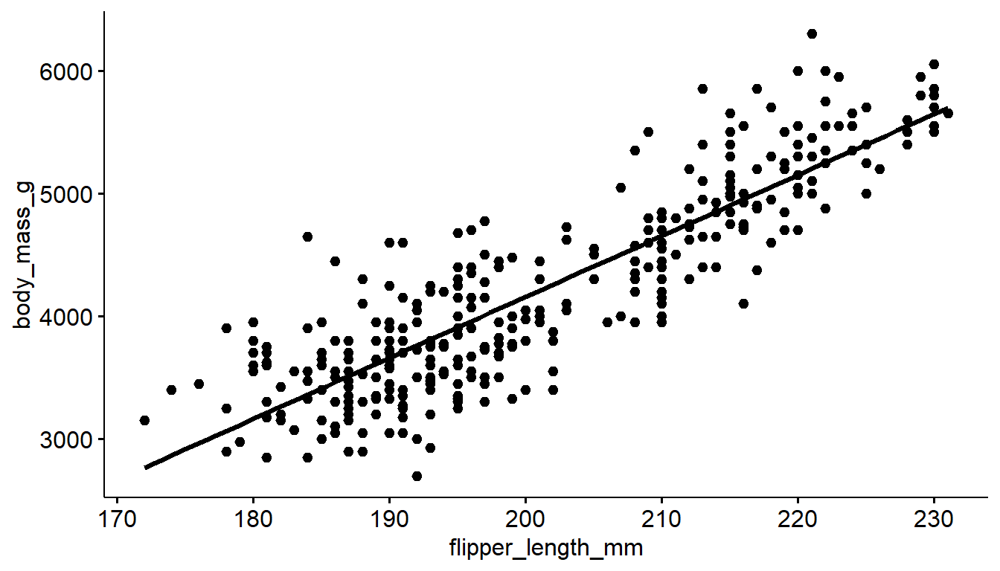
6.5 One continuous vs. one categorical
The tactic here is to create an appropriate plot for a continuous variable, and then fill the geometric area or color the lines depending on the level of the categorical variable.
6.5.1 Histograms
Neither filling or coloring the histogram bars using ggplot2 depending on the group work well due to the overlap.
ggplot(pen, aes(x=body_mass_g,
fill=species)) +
geom_histogram()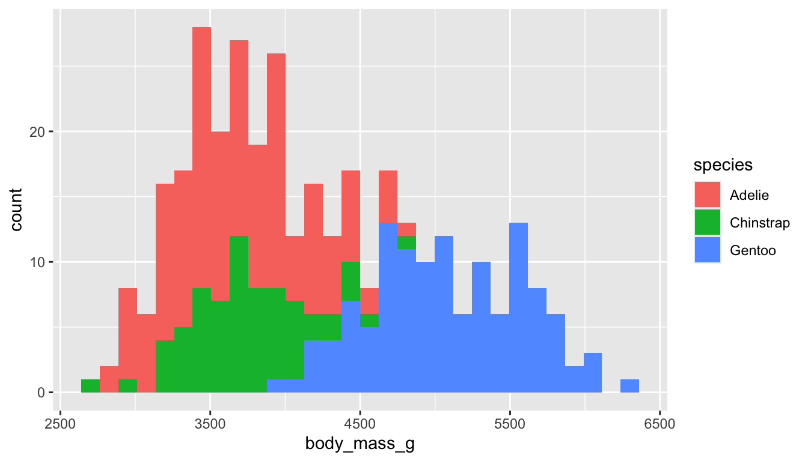
ggplot(pen, aes(x=body_mass_g,
color=species)) +
geom_histogram()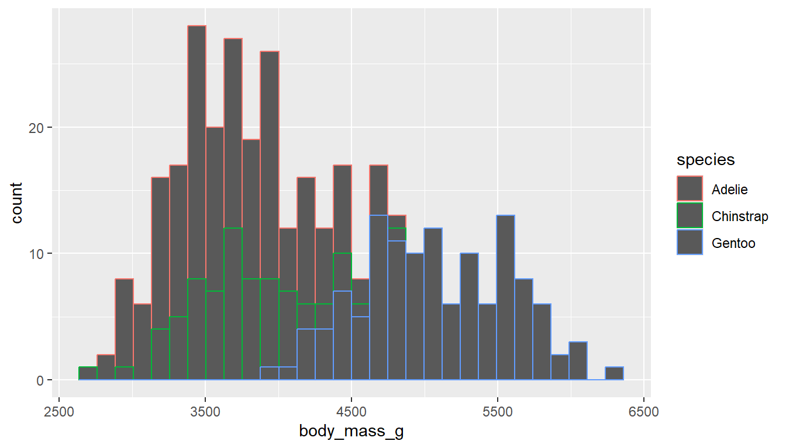
The defaults for gghistogram automatically adjusts the transparency of the histogram bars to make the overlap a little less troublesome, but it doesn’t always work well.
gghistogram(pen, x = "body_mass_g", fill = "species")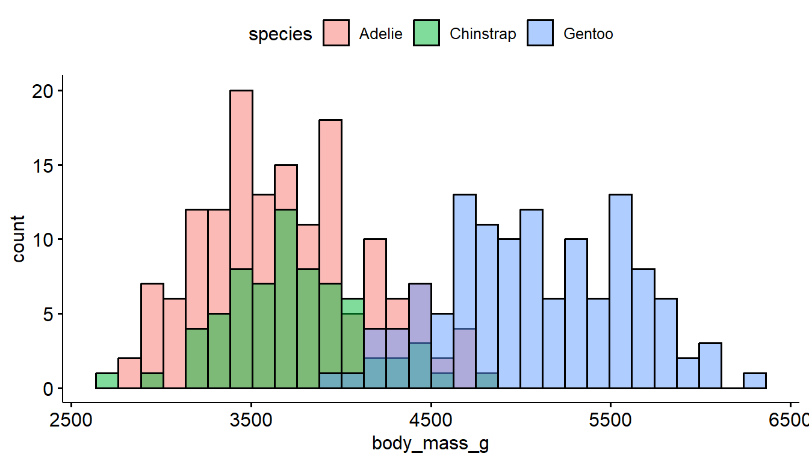
6.5.2 Density curves
Similar to histograms, you can fill or color the density curves depending on the group.
It’s still hard to see some groups due to the overlap, so we adjust the transparency by applying a value to alpha inside the geom_density layer. Alpha is a measure of transparency, from 0=clear to 1=opaque.
ggplot(pen, aes(x=body_mass_g, fill=species)) +
geom_density(alpha=.3)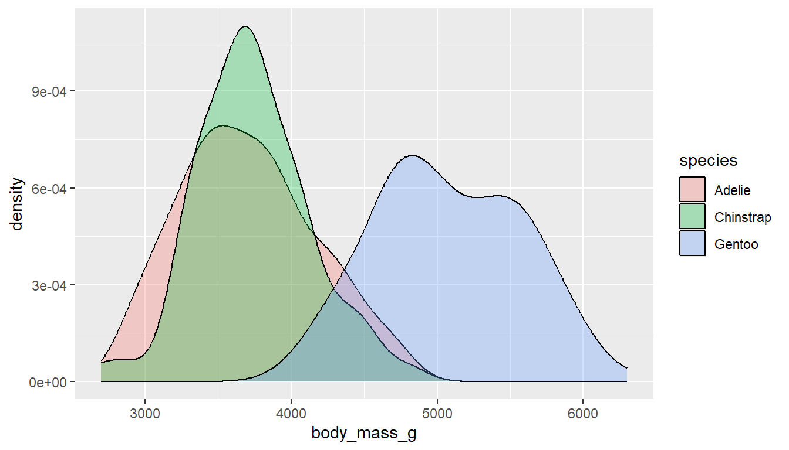
You could also just color the lines and leave the fill alone.
ggplot(pen, aes(x=body_mass_g, color=species)) + geom_density()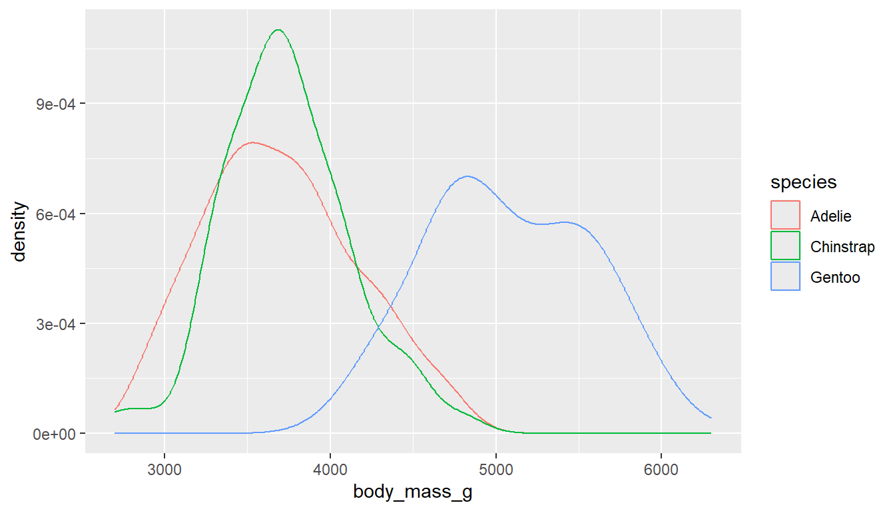
The ggdensity function also has color and fill options, where the transparency of the density plots are automatically handled.
ggdensity(pen, x="body_mass_g", color = "species") # left
ggdensity(pen, x="body_mass_g", fill = "species") # right
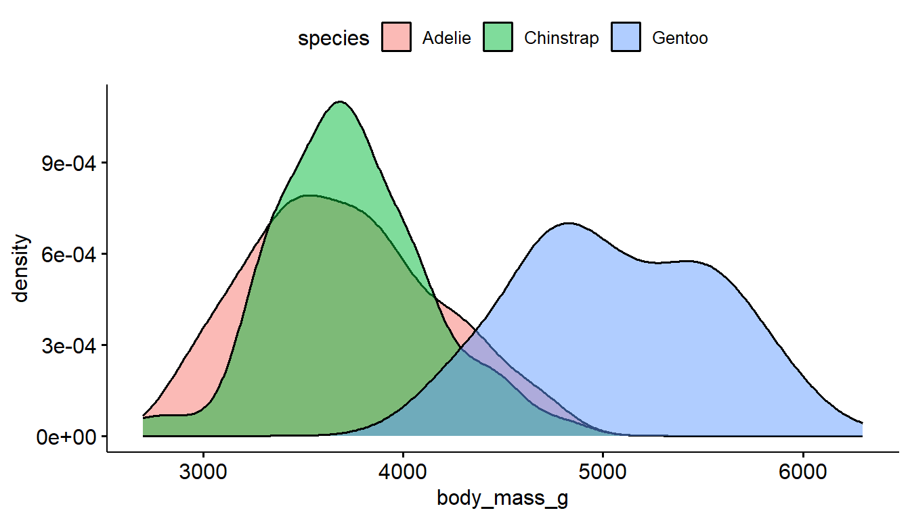
6.5.3 Boxplots
To create grouped boxplots, put the continuous variable on one axis, and the categorical on the other axis.
ggplot(pen, aes(x=body_mass_g, y=species)) + geom_boxplot() # left
ggplot(pen, aes(x=species, y=body_mass_g)) + geom_boxplot() # right
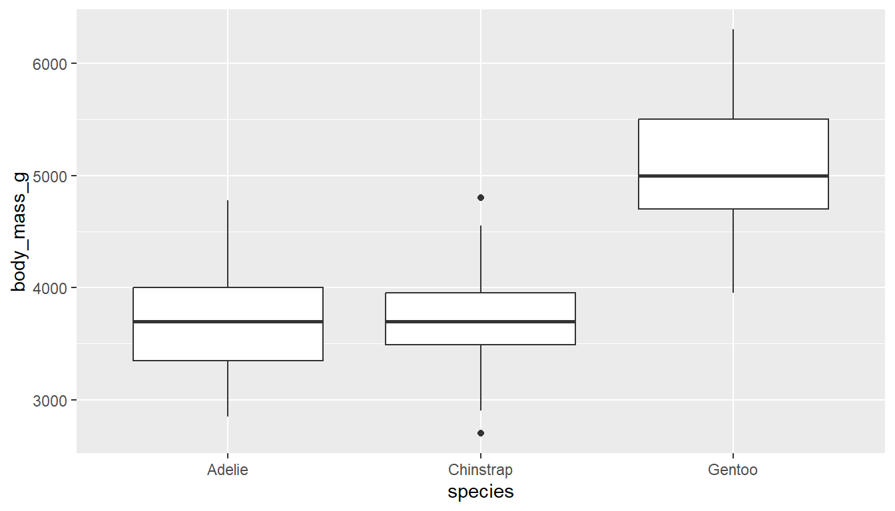
If you want an additional color feature (and the corresponding legend), you can either fill or color the boxes by the same categorical variable.
ggplot(pen, aes(x=body_mass_g, y=species, fill = species)) + geom_boxplot() # left
ggplot(pen, aes(x=species, y=body_mass_g, color = species)) + geom_boxplot() # right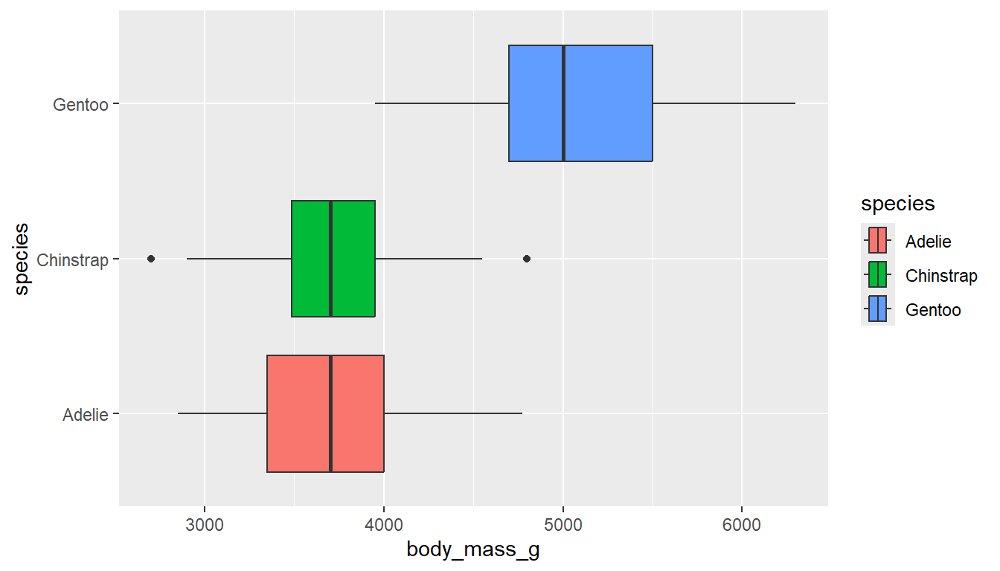

Not much difference in the style between the ggplot2 and ggboxplot versions. This method uses slightly less code.
ggboxplot(pen, y="body_mass_g", fill = "species") # left
ggboxplot(pen, y="body_mass_g", color = "species") # right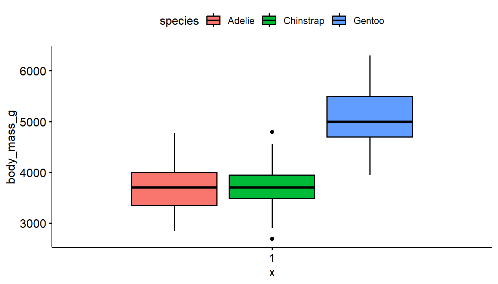

6.6 Two categorical variables
Recall from Section Section 4.1.1 that frequency tables are a common way to summarize categorical variables, and that both the frequency and relative percent are important summary numbers. Those percentages are even more important when comparing the joint distribution of two categorical variables.
Cross-tabs, cross-tabulations and two-way tables are different names for the same thing, and can be created by using the table() and tbl_summary functions. The values in each cell are the number of observations in that combination of characteristics.
We use this tactic in Chapter Chapter 4 to check our recodes.
Let’s explore the relationship between the penguins sex and species.
6.6.1 Frequency and proportion tables
The first argument species specifies the levels that show on the rows, the second argument sex specifies the columns.
table(pen$species, pen$sex)
female male
Adelie 73 73
Chinstrap 34 34
Gentoo 58 61To achieve the same ordering with species on the rows and sex on the columns, we include="species" and set by = "sex".
tbl_summary(pen, include = "species", by = "sex")| Characteristic | female N = 1651 |
male N = 1681 |
|---|---|---|
| species | ||
| Adelie | 73 (44%) | 73 (43%) |
| Chinstrap | 34 (21%) | 34 (20%) |
| Gentoo | 58 (35%) | 61 (36%) |
| 1 n (%) | ||
There are 73 female Adelie penguins, and 61 male Gentoo penguins.
6.6.1.1 Proportions
By default, when we ask for proportions we get the cell proportions. That is, the percent out of all penguins in that data set that have that combination of traits. The percents add up to 1 across the entire table.
table(pen$species, pen$sex) |> prop.table()
female male
Adelie 0.2192192 0.2192192
Chinstrap 0.1021021 0.1021021
Gentoo 0.1741742 0.1831832Note that gtsummary tables tend to round pretty heavily.
tbl_summary(pen, include = "species", by = "sex", percent = "cell")| Characteristic | female N = 1651 |
male N = 1681 |
|---|---|---|
| species | ||
| Adelie | 73 (22%) | 73 (22%) |
| Chinstrap | 34 (10%) | 34 (10%) |
| Gentoo | 58 (17%) | 61 (18%) |
| 1 n (%) | ||
21.9% of all penguins are Adelie females, 18.3% of all penguins are male Gentoo’s.
Comparing percentages
More often than not, we want to compare percents of one group – within each level of the other group. For example is the male to female ratio the same for each species?
6.6.1.2 Row percents
To compare the distribution of sex (columns) within each of the sepecies (rows) we need row percentages. The percentages now add up to 1 across the rows and the comparison groups are each species.
Specify margin=1 inside the prop.table()
table(pen$species, pen$sex) |> prop.table(margin=1) |> round(3)
female male
Adelie 0.500 0.500
Chinstrap 0.500 0.500
Gentoo 0.487 0.513I added a round function to the end of this because noone needs that many decimal places.
tbl_summary(pen, include = "species", by = "sex", percent = "row")| Characteristic | female N = 1651 |
male N = 1681 |
|---|---|---|
| species | ||
| Adelie | 73 (50%) | 73 (50%) |
| Chinstrap | 34 (50%) | 34 (50%) |
| Gentoo | 58 (49%) | 61 (51%) |
| 1 n (%) | ||
50% of Adelie penguins are male, but 51.3% of Gentoo penguins are male.
6.6.1.3 Column percents
To compare the distribution of species (rows) within each of the columns (sex) we need column percentages. The percentages now add up to 1 down the columns and the comparison groups are male and female.
Specify margin=2 in prop.table()
table(pen$species, pen$sex) |> prop.table(margin=2) |> round(3)
female male
Adelie 0.442 0.435
Chinstrap 0.206 0.202
Gentoo 0.352 0.363tbl_summary(pen, include = "species", by = "sex", percent = "column")| Characteristic | female N = 1651 |
male N = 1681 |
|---|---|---|
| species | ||
| Adelie | 73 (44%) | 73 (43%) |
| Chinstrap | 34 (21%) | 34 (20%) |
| Gentoo | 58 (35%) | 61 (36%) |
| 1 n (%) | ||
44% of female penguins are Adelie species, 36% of male penguins are Gentoo.
6.6.2 Stacked bar charts
Sometimes pictures are better than tables, so let’s try to apply the same fill tactic that we used in the last section.
ggplot(pen, aes(x=species, fill=sex)) + geom_bar()
Stacked barcharts are the ggplot2 default
Stacked barcharts are generally only useful when comparing percents out of a whole. To get the correct view you can add a position = "fill" argument to the geom_bar() layer.
ggplot(pen, aes(x=species, fill=sex)) +
geom_bar(position = "fill") +
ylab("Proportion")
6.6.3 Side by side bar charts
Add the argument position=dodge inside the geom_bar layer to put the bars side by side.
ggplot(pen, aes(x=species, fill=sex)) +
geom_bar(position = "dodge")
The plot_xtab function is the two-way table analogy to plot_frq to create a barchart with clear lables on the bars for the N and % (and NA values dropped). Note you have to use dollar sign notation here for the variables.
plot_xtab(x = pen$species, grp = pen$sex)
By default this plots the vertical axis as percents, not counts, and it shows the marginal total for the variable that’s on the x-axis. We can remove the total by setting show.total to false.
plot_xtab(x = pen$species, grp = pen$sex,
show.total = "false")
As before, typically we aren’t interested in comparing proportions out of the whole, but proportions out of one of the two margins (variables).
6.6.4 Comparing Percents
Our eyes make comparisons the best when the bars are physically close to each other. So generally you want to put the groups we want to compare within on the x-axis, and have separate bars for each level of the variable we want to compare across.
See each tab on how to compare the distribution of sex within each species. This corresponds to the row percents from Section 6.6.1.2 .
Put species on the x-axis and fill by sex.
ggplot(pen, aes(x=species, fill=sex)) + geom_bar(position = "dodge")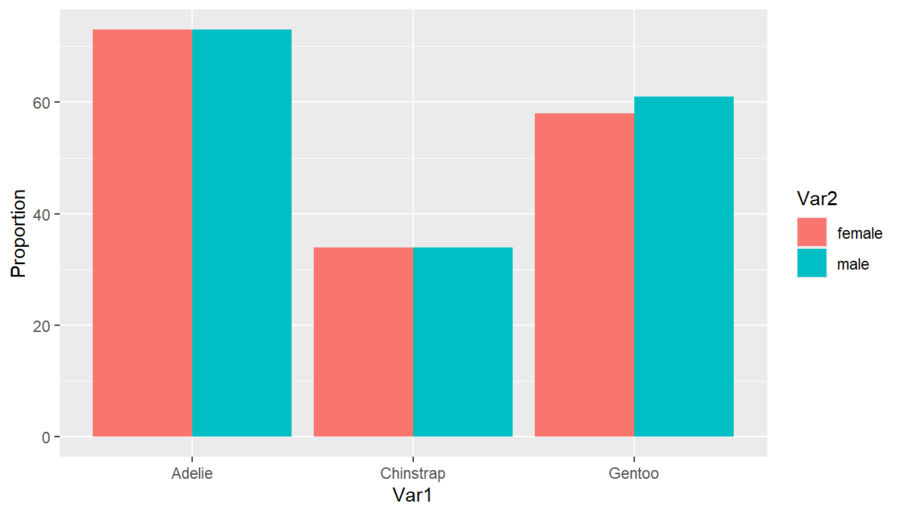
Put species on the x-axis and grp by sex, and specify margin = "row".
plot_xtab(x = pen$species, grp = pen$sex, show.total = "false",
margin = "row")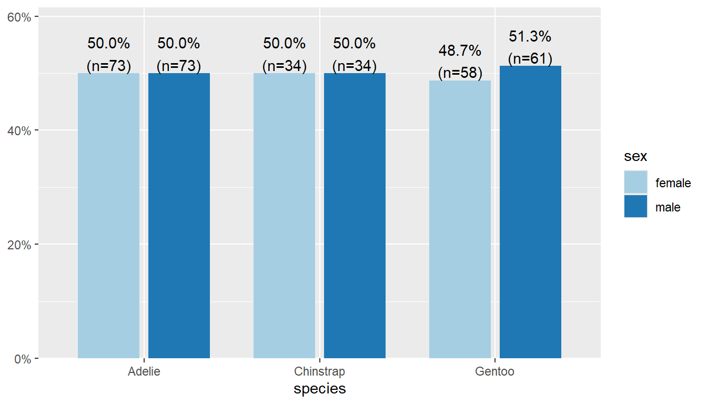
👉 Your Turn
Modify the code above to create a plot to compare the distribution of species within each sex.
ggplot2 solution
ggplot(pen, aes(x=sex, fill=species)) + geom_bar(position = "dodge")
sjPlot solution
plot_xtab(x = pen$sex, grp = pen$species, show.total = "false", margin = "row")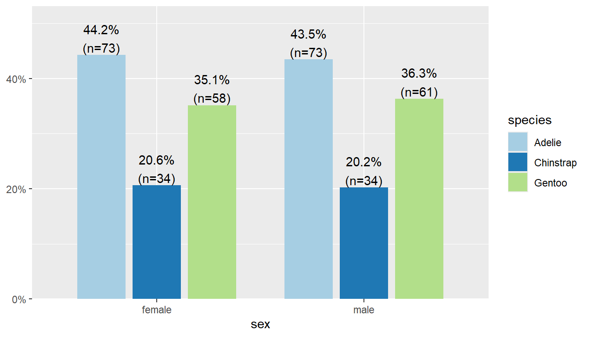